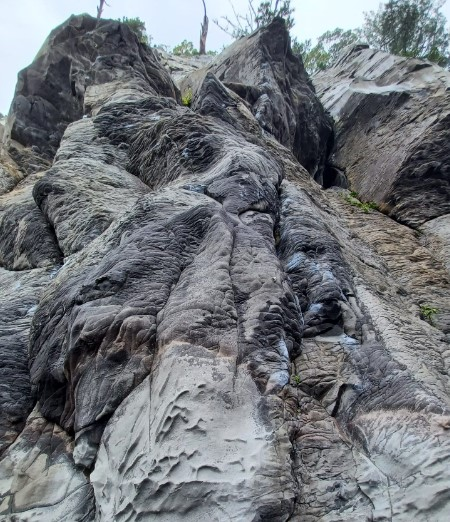

Traditional Climbing

What is Traditional Climbing
Traditional climbing, often referred to as "trad climbing," is a form of rock climbing in which climbers place their own removable protection devices, such as nuts and camming devices ( called "cams"), into cracks and features in the rock as they ascend a route.
Equipment
- Shoes
- Personal Harness
- Ropes
- Belay Devices
- Quickdraws
- Cams and nuts
How to Start
- Pre-requisites: Everything you already know from outdoor sport + you need to learn how to place protection on your own
- Plan a trip: You should already know this
- Getting there: and this
- Gear up: and this
- Climb! Enjoy!